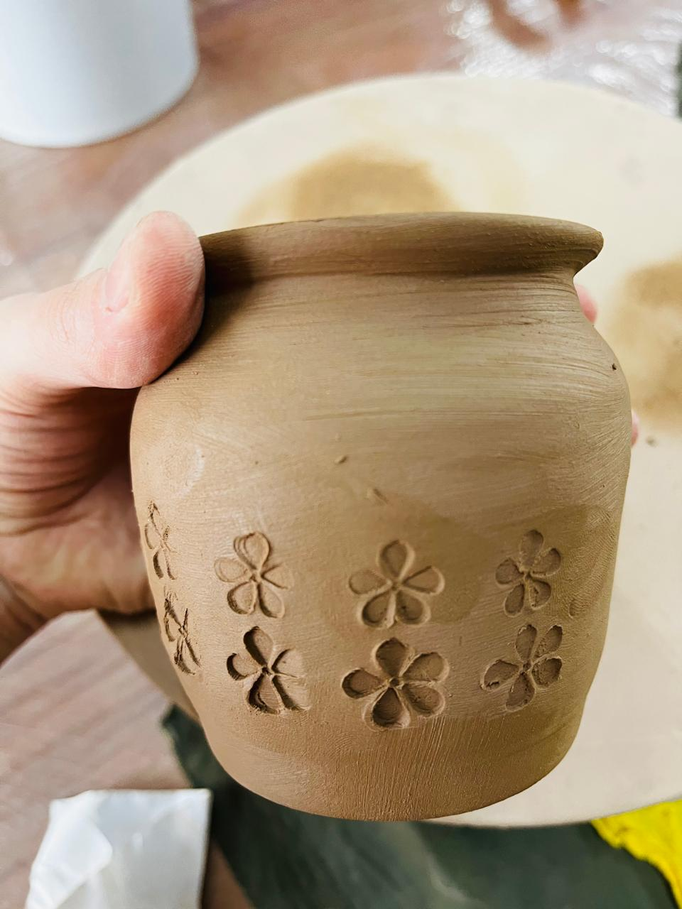

Cada objeto es hecho a mano, utilizamos arcilla blanca, gres y greda.
Te invito a que conozcas un poco de Munay Lulú y que elijas esa pieza que tanto estabas buscando.
Son productos artesanales, nunca van a ser iguales uno del otro, algunos realizados en torno y otros con diferentes técnicas, pero buscamos que se note lo artesanal.
